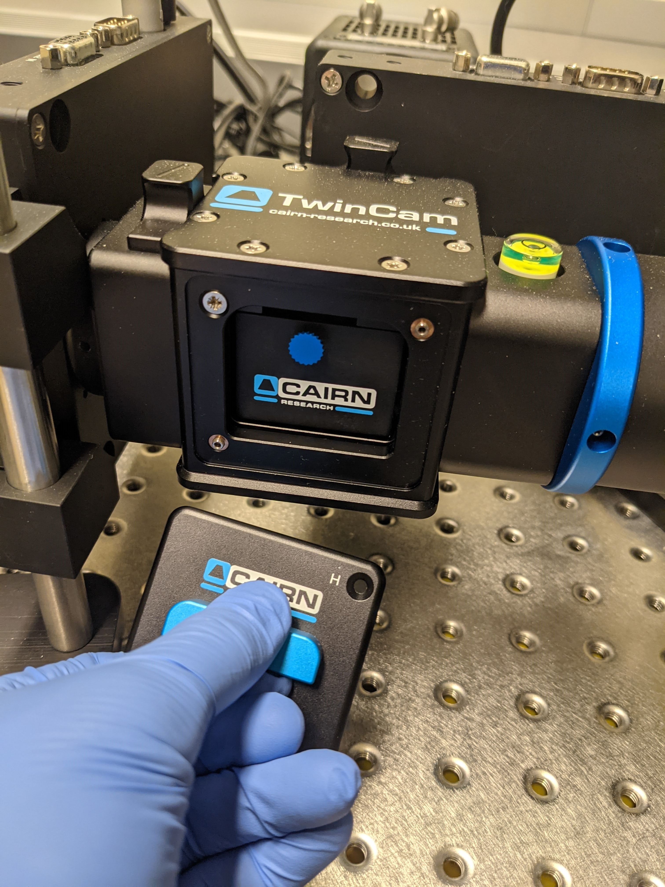

Troubleshooting#
Microscope does not turn on properly
This can be heard (by the microscope beeping) and also seen (by the joystick pad not turning on). Solution: Turn off the microscope body and turn on again. It should work within three tries.
Parts of the microscope don't respond to Elements
Solution: Try restarting the software and microscope body.
Elements crashed and FRAP doesn't work any more
Solution: The microscope body must be power cycled in addition to restarting Elements.
Switching between OCs takes a while
If OCs have different camera settings (e.g. readout mode or bit-depth BUT NOT EXPOSURE TIME), it takes a long time for the camera to change settings.
Can't see blue or green signal through computer in single-camera mode
Check to see if the TwinCam dichroic mirror is in. If it is, remove it.

Common Pitfalls#
Do not place coverslips too close to the edge.
Do not get close to the stage insert edge during live imaging with immersion objectives if you want multipoints